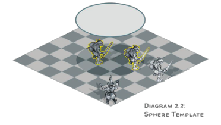
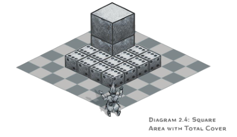
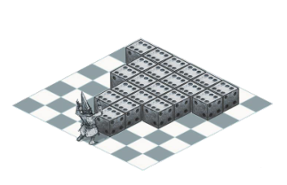
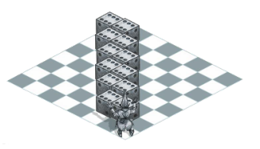

Dungeon master’s tools
作为地下城主，你负责监督游戏并把玩家们经历的故事编织在一起。你是保持这一切进展的人，这一章是为你准备的。它为您提供了新的可选规则，以及一些用于创建并运行冒险和战役的进阶工具。它是《地下城主指南》中的工具和建议的补充。
本章从可选规则开始，旨在帮助你更顺利地运行游戏的某些部分。这一章深入探讨了几个话题――构建遭遇、随机遭遇、陷阱、魔法物品和休整期――这些都与你如何创造和演绎你的冒险有关。
本章的内容是为了给你提供方便，而不是反过来制约你。你可以忽略掉任何你不需要的部分，并且随你心意来定制自己的规则。游戏规则是为你和你所运行的游戏服务的。一如既往，让它们成为你自己的工具。
同时效应 Simultaneous Effects
游戏中的大部分效应都是按照规则或DM安排的顺序依次发生的。在罕见的情况下，尤其是在某个生物的回合开始或结束时，可能会出现同时发生的效应。如果复数事件同时发生在角色或怪物的回合中，那么将由控制该生物的人――玩家或DM――来决定这些事件发生的顺序。例如，在某位玩家角色的回合结束时同时存在两个效应，则该玩家决定两个效应中的哪一个先生效。
坠落 Falling
从高处坠落无论对于冒险者还是其敌人来说都有重大的风险。在《玩家手册》给出的规则很简单：在一次坠落结束时，你每坠落10尺就会受到1d6点钝击伤害，最大值为20d6。同时你会以倒地状态着陆，除非你以某种方式避免了坠落伤害。这里有两个可选项，用以扩展这条简单粗暴的规则。
坠落速度Rate of Falling
原本的坠落规则假定一个生物坠落时会立即落下整段距离。但如果一个生物在坠落时处于一个相当高的高度，比如狮鹫的背上或飞艇的甲板呢？事实上，从这样的高度坠落，区区几秒钟可到不了地面，这样的高空坠落会持续到下个回合。如果你认为高空坠落要花费足够的时间，那么使用下面的可选规则。
当你从极高处坠落时，你会立即下降500尺。如果你下一回合仍将继续坠落，那么那一回合结束时你会再下降500尺。这个过程一直持续到坠落结束，要么是因为你撞到地面，要么是以别的方式终止坠落。
飞行生物与坠落Flying Creatures and Falling
飞行中的生物将会在陷入倒地Prone状态、速度降到0尺或者以别的方式失去移动能力的时候坠落，除非它能盘旋（悬停）或被魔法托举在空中，例如魔法飞行术fly。
如果你想让飞行生物比非飞行生物有更高的生存几率，那么使用这个规则：在计算坠落伤害之前，先从它的坠落距离中减去该生物的当前飞行速度。这条规则适用于陷入倒地状态但仍然保持清醒，且当前飞行速度大于0尺的飞行者。这个规则模拟的是生物猛烈地拍打翅膀，或者采取类似的措施来减缓坠落速度的情形。
如果你使用了上一节中的坠落速度规则，那么一个飞行生物同样会在发生坠落的回合下降500尺，就像其他生物一样。但如果该生物在其后的回合中仍在坠落并处于倒地状态，那么它可以通过花费一半的飞行速度解除倒地状态并终止坠落（规则上来说，相当于在半空中“起身”）。
睡眠Sleep
和现实世界一样，D&D的角色们也需要花费数个小时用于睡眠，通常是长休息的一部分。大多数怪物也需要睡眠。当一个生物睡着时，它受到昏迷Unconscious状态的影响。下面是一些关于这一基本事实的规则。
唤醒某人Waking Someone
当一个生物处于自然睡眠，而不是受魔法或药剂影响的睡眠中，如果它受到任何伤害，或者其他人用一个动作摇晃或拍打这个生物，它就会醒来。一声突如其来的巨响，如叫喊、雷鸣或铃声，也会唤醒自然睡眠中的某人。
耳语不会影响睡眠，除非睡眠者的被动感知（察觉）值为20或更高，并且耳语者就在睡眠者周围10尺以内。当周围环境比较安静（没有风声、鸟鸣、蟋蟀、闹市，或者类似的杂音）且睡眠者的被动感知（察觉）值为15或更高时，正常音量的谈话便可以吵醒它。
睡不解甲Sleeping In Armor
穿着轻甲睡觉对穿戴者没有不利影响，但穿着中甲或重甲睡觉则很难在长休息中完全恢复。
当你穿着中甲或重甲睡觉并完成一次长休息后，你只能恢复已消耗的生命骰数量的四分之一（但最少一个）。如果你处于任何程度的力竭Exhaustion状态中，则休息不会降低你的力竭等级。
不眠不休Going Without A Long Rest
虽然长休息并非强制性的，但是不睡觉的确会导致一些后果。如果你想体现缺乏睡眠对角色和生物的影响，可以使用这些规则。
无论从什么时间算起，当你结束了一个24小时的时段却没有完成一次长休息的话，你必须通过一次DC为 10的体质检定，失败则增加一级力竭状态。
如果你连续几天不眠不休，将很难解除力竭状态。在第一个24小时时段后，每过一个未完成长休息的24小时时段，体质检定DC便增加5。当你完成长休息时，DC重置为10。
精金武器Adamantine Weapons
精金是从陨石和特殊矿脉中发现的超硬金属。除了被用来制作精金护甲Adamantine armor（详见《地下城主指南》“魔法物品”），该金属也用于锻造武器。
精金锻造或有精金镀层的近战武器和弹药具有极强的破坏能力。每当一件精金武器或一发精金弹药命中一个物件时，这次攻击会造成重击。
精金制成的近战武器或每十发弹药会比普通货色额外花费500金币，无论该武器或弹药是通体由精金打造还是仅仅镀了一层。
打结Tying Knots
像打结这类琐碎的小事原本没必要专门制定一套规则。但有时为了营造戏剧性的效果，当某人试图解开一或挣脱一个绳结时，我们需要知道这个结是否足够复杂。这里有一个可选规则来确定绳结的有效性。
当某人打结时，进行一次智力（巧手）检定，以检定最终结果作为DC。试图解开这个结须通过一次智力（巧手）检定，而想要挣脱这个结则须通过一次敏捷（杂技）检定。
这一规则故意将巧手技能与智力属性搭配，而不是通常的敏捷。这是一个应用《玩家手册》第7章中“变体：技能搭配其他属性Variant: Skills with Different Abilities”规则的例子。
工具熟练项Tool Proficiencies
工具熟练项是用来突出角色背景和专业水平的有效途径。然而在游戏进行中，工具的使用有时与技能的使用重叠，而且应该在何种情况下如何使用它们也不够明确。本节提供了各种工具可以在游戏中使用的方法。
检定优势Advantage。如果一个工具的使用和一个技能的运用都适用于同一个检定，而一个角色同时具有该工具和该技能的熟练，那么可以考虑允许这个角色在检定时具有优势。这个简单的收益对于鼓励玩家获取工具熟练大有帮助。在下文的工具说明中，这种益处通常被描述为额外的洞察力（或类似的东西），这意味着增加了检定成功的机会。
额外奖励Added Benefit。此外，考虑给有相关技能和相关工具熟练的人一个检定成功后的额外奖励。这种奖励可以是提供更详细的信息，或者也可以模拟不同类型的检定成功的效果。例如，一个具有泥瓦匠工具熟练的角色成功地通过感知（察觉）检定在石墙中找到一扇密门。这个角色不仅注意到密门的存在，而且你可以决定该角色的工具熟练项使其在一个智力（调查）检定中自动成功，知道这扇密门该如何打开。
格子地图上的效应范围 Areas of Effect on a Grid
在《城主指南》中提供了以下使用格子地图时判断效应范围的简单规则。
选择方格一角的顶点作为效应范围的源点，然后按通常的规则实行（见《玩家手册》第10章“效应范围”一节）。如果效应范围是圆形的并覆盖至少半个方格，那它就看作作用于整个方格。
这条规则是可行的，但是它可能需要大量的现场计算。本节则提供两种能明确效应范围的方法：模板法和标记物法。这两种方法都假定你使用了某种格子地图和微缩模型来进行游戏。这两种方法有可能在计算指定范围的方格数时给出不同的结果，因此不建议混合使用，请选择你和玩家们觉得更简单或更直观的方法。
模板法 Template Method
模板法需要使用不同形状的平面板块来表示效应范围。该方法旨在准确绘制出格子地图上每个效应范围的长度和宽度，并明确判断所有将会受到效应影响的生物。你需要预先制作模板，或找到现成的模板。
制作模板 Making a Template。制作模板很简单。拿一张纸或一张卡片，将其剪裁成你需要使用的效应范围的形状。每5尺效应距离对应1个方格的边长（译注：原文为1寸模板尺寸，因为大家使用的网格地图规格不一定一致，所以此处改为1格，更符合实际）。例如，直径40尺的火球术拥有一个半径20尺的球形范围，这将转化为直径8格长度的圆形模板。
使用模板 Using a Template。要使用范围模板，需将其放置在格子地图上。若地形平坦，可以将模板直接放在地图表面；否则，请把模板置于地图上方，并记下被模板覆盖或部分覆盖的方格。若一个方格有任何部分被覆盖在模板下方，则该方格包含在效应范围内。若一个生物的微缩模型处于一个受到效应影响的方格内，则该生物就处于这个效应范围内。与模板的边缘相邻的方格不包含在效应范围内；受影响的方格必须完全或部分被模板覆盖。
你也可以在没有格子地图的情况下使用此方法。若如此做，如果一个微缩模型的任何部分被模板覆盖，则它所指代的生物处于这个效应范围内。
在放置模板时，需遵循《玩家手册》中关于确定效应范围的所有规则。如果一个效应范围来自一位施法者，例如一个锥状或线状范围，则模板应以该施法者为源点，并放置在该施法者指定的且符合规则的区域上。
图2.1和2.2展示了模板法的使用范例。


标记物法 Token Method
标记物法旨在让效应范围看得见摸得着，变得更有趣味性。要使用该方法，请准备一些骰子或其他标记物，你将使用它们来表示你的效应范围。
该方法并非准确地描绘不同效应范围的形状，而是为你提供一种在格子地图上轻松转换成它们的方格版本的方法，正如以下小节所述。
使用标记物 Using Tokens。每5平方尺的效应范围就变成一个骰子或其他的你放置在方格上的标记物。每个标记物都放置在方格内，而非方格一角的顶点。如果一个效应范围的标记物处于一个方格内，则该方格处于该效应范围内。就这么简单。
图2.3到2.6展示了以骰子作为标记物时该方法的使用范例。
圆形 Circles。该方法使用方格来表示所有的范围，一个圆形的范围将转变成一个方形的范围，不论该范围是球状、柱状还是半圆。例如，直径20尺的焰击术拥有一个半径10尺的柱状范围，被转化为一个边长20尺的方形范围，正如图2.3所示。图2.4则展示了总覆盖范围。
锥状 Cones。一个锥状范围将由源点延伸出的数行标记物表示。如图2.5所示，在各行中，方格是并排或对角放置的。要确定一个锥状范围所包含的行数，请将其长度除以5。例如，一个30尺的锥状范围包含六行标记物。
下面介绍如何放置每一行标记物。从最靠近锥状源点的方格开始，先放置一个标记物。该方格可以与源点所在方格垂直相邻或处于对角。若第一行的方格与源点处于对角，在该行之外的每一行都比前一行要多放置一个标记物。放置一行的标记物时，要使它们所在的方格与前一行的方格共享同一条边。如果第一行的方格与源点垂直相邻，你在之后的每一行都将多放置一个标记物，将其放置在新一行的任意一端（不必如图2.5右图中展示那样与前一行的方格共享一条边）。依照上述方法放置标记物，直到完成锥状范围的所有行。
线状 Lines。如图2.6所示，一个线状范围可以从源点开始向垂直或对角的方向延伸。





